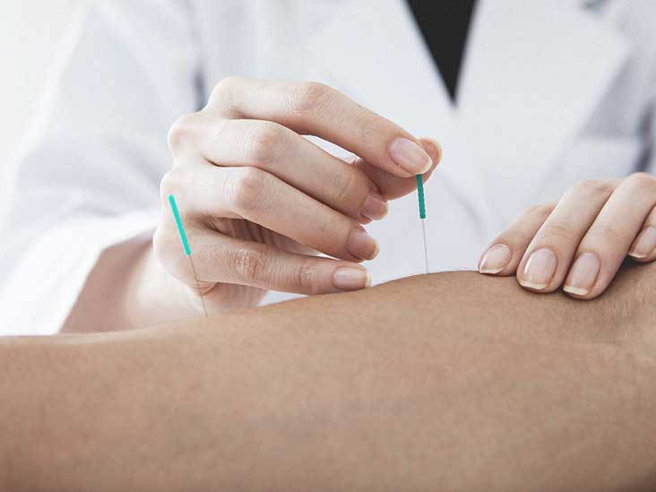

Acupuncture
Acupuncture is a method of encouraging the body to promote natural healing and to improve functioning. This is done by inserting needles and applying heat or electrical stimulation at very precise acupuncture points.
The classical Chinese explanation is that channels of energy run through the body and over its surface. These energy channels can be influenced by needling acupuncture points to unblock obstructions to movement of energy. These obstructions are believed to result in illness.
The modern scientific explanation is that acupuncture stimulates the nervous system to release chemicals in the muscles, spinal cord, and brain. These chemicals will either change the experience of pain or trigger release of other chemicals which influence the body’s internal regulating system. The improved energy and biochemical balance produced by acupuncture stimulates the body’s natural healing abilities and promotes physical and emotional well-being.
Acupuncture is a very old medical art, and there are many approaches to learning and practicing it. Medical acupuncture is the term used to describe acupuncture performed by a doctor trained and licensed in Western medicine who has also had thorough training in acupuncture as a specialty practice. Such a doctor can use one or the other approach, or a combination of both as the need arises.
Medical acupuncture can promote health and well-being, prevent illness, and treat various medical conditions. Acupuncture is often associated with pain control, though it can have much broader applications. It can be used as a stand-alone treatment or as a complement to other medical treatment forms. The World Health Organization recognizes the use of acupuncture in the treatment of a wide range of medical problems. Research suggests that acupuncture can provide specific support in working with addiction treatment, mood disorders, fibromyalgia and pain management. Acupuncture is particularly useful in resolving physical problems related to tension and stress and emotional conditions. It has been used to help reduce cravings associated with discontinuing opioids, tobacco, and alcohol. Acupuncture can promote a sense of calm and well-being, including in individuals experiencing anxiety and depression.

Acupuncture
Basics
Acupuncture is a method of encouraging the body to promote natural healing and to improve functioning. This is done by inserting needles and applying heat or electrical stimulation at very precise acupuncture points.
How Does Acupuncture Work?
The classical Chinese explanation is that channels of energy run through the body and over its surface. These energy channels can be influenced by needling acupuncture points to unblock obstructions to movement of energy. These obstructions are believed to result in illness.
The modern scientific explanation is that acupuncture stimulates the nervous system to release chemicals in the muscles, spinal cord, and brain. These chemicals will either change the experience of pain or trigger release of other chemicals which influence the body’s internal regulating system. The improved energy and biochemical balance produced by acupuncture stimulates the body’s natural healing abilities and promotes physical and emotional well-being.
What is Medical Acupuncture?
Acupuncture is a very old medical art, and there are many approaches to learning and practicing it. Medical acupuncture is the term used to describe acupuncture performed by a doctor trained and licensed in Western medicine who has also had thorough training in acupuncture as a specialty practice. Such a doctor can use one or the other approach, or a combination of both as the need arises.
Medical acupuncture can promote health and well-being, prevent illness, and treat various medical conditions. Acupuncture is often associated with pain control, though it can have much broader applications. It can be used as a stand-alone treatment or as a complement to other medical treatment forms. The World Health Organization recognizes the use of acupuncture in the treatment of a wide range of medical problems. Research suggests that acupuncture can provide specific support in working with addiction treatment, mood disorders, fibromyalgia and pain management. Acupuncture is particularly useful in resolving physical problems related to tension and stress and emotional conditions. It has been used to help reduce cravings associated with discontinuing opioids, tobacco, and alcohol. Acupuncture can promote a sense of calm and well-being, including in individuals experiencing anxiety and depression.